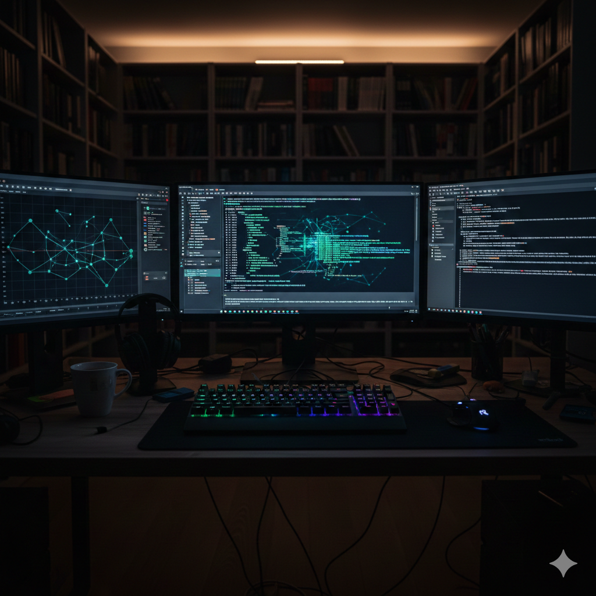
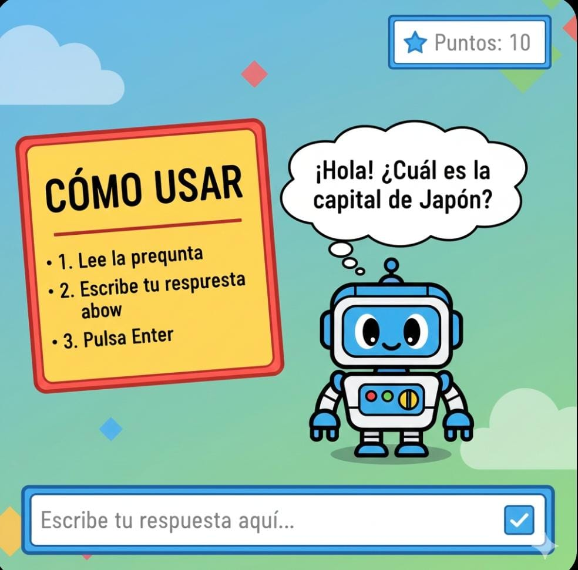

Bienvenido al Simulador de Programación
Este simulador ha sido diseñado para apoyar la preparación y práctica de evaluaciones de la materia de Programación. Su objetivo principal es permitir al estudiante reforzar sus conocimientos, poner a prueba su razonamiento lógico y familiarizarse con el tipo de preguntas que pueden presentarse en una evaluación.
A través de este entorno interactivo, el estudiante podrá responder preguntas relacionadas con los fundamentos de la programación, analizar ejercicios de lógica y revisar sus respuestas al finalizar la práctica. Esto facilita la autoevaluación y ayuda a identificar los temas que requieren mayor refuerzo.
En esta sección se presenta un video introductorio que explica el funcionamiento del simulador y brinda recomendaciones para aprovecharlo correctamente. Se recomienda observar el video antes de iniciar la práctica, ya que proporciona una visión general del proceso de evaluación y del uso adecuado de la plataforma.
Diseño de Mayerly Mota 3ro info "B"Instrucciones
Antes de iniciar la práctica, lea atentamente las siguientes instrucciones. Este simulador ha sido diseñado para ayudarle a prepararse para una evaluación de la materia de Programación, por lo que se recomienda responder cada pregunta con concentración y honestidad.
Seleccione una sola opción en cada pregunta. Una vez elegida la respuesta, podrá continuar con la siguiente pregunta hasta completar el cuestionario. Al finalizar, presione el botón para enviar sus respuestas y acceder a la sección de resultados.
En la sección de resultados podrá revisar las respuestas seleccionadas, identificar cuáles fueron correctas e incorrectas y reflexionar sobre su desempeño. Este proceso de autoevaluación le permitirá reconocer los temas que necesita reforzar antes de rendir la prueba real.
- Selecciona una sola opción por pregunta.
- Responde todas las preguntas antes de finalizar.
- Al finalizar, pulsa "Enviar respuestas" o "Finalizar simulador" para ver tus resultados.
Preguntas de Programación
Ejercicios de Lógica
Resultados
Zona de Juegos
Aquí podrás agregar enlaces a juegos de lógica.